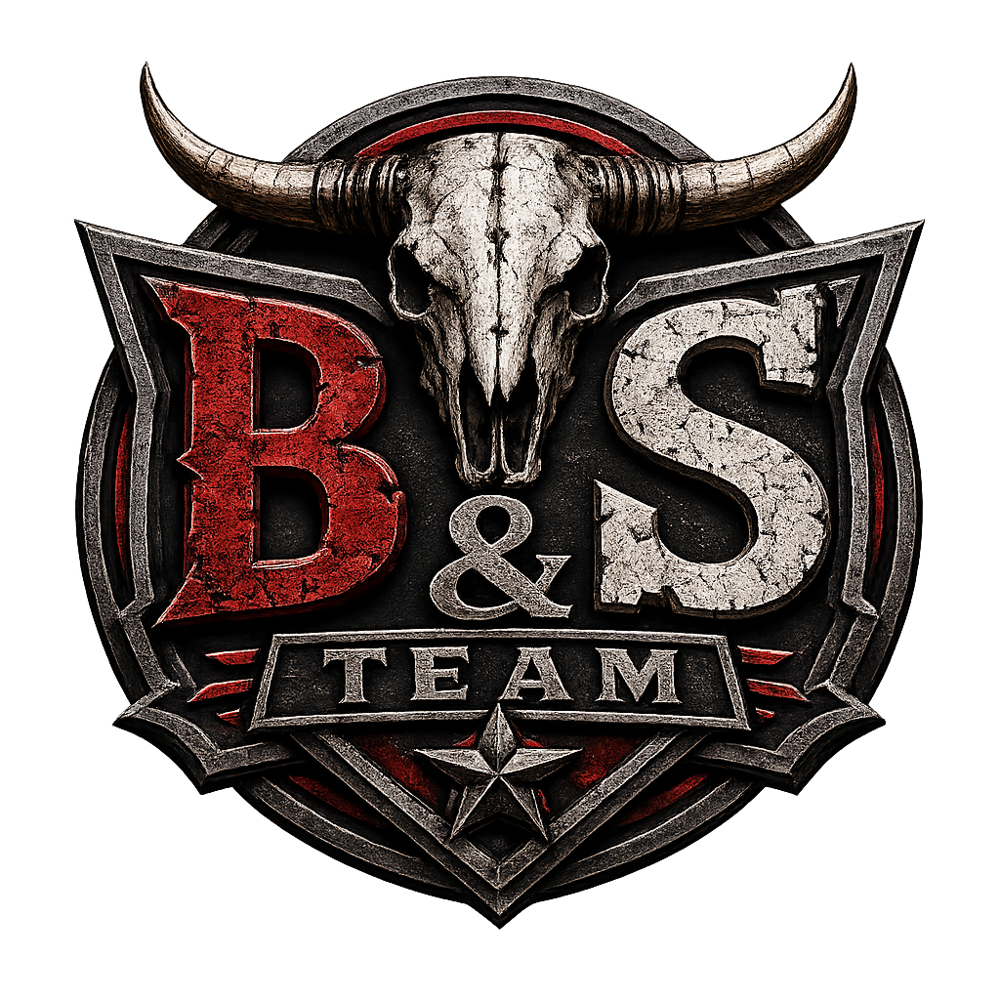

Offizielles Regelwerk für das Server-Team
📜 Team Regelwerk lesenJedes Teammitglied repräsentiert den Server und handelt jederzeit professionell. Entscheidungen werden objektiv, fair und unabhängig von persönlichen Beziehungen getroffen. Teaminterne Informationen sind vertraulich und dürfen nicht an Dritte weitergegeben werden. Das Ausnutzen von Teamrechten oder Berechtigungen ist strengstens untersagt. Das Team arbeitet respektvoll miteinander und unterstützt sich gegenseitig.
Als Teammitglied bist du verpflichtet: freundlich und respektvoll aufzutreten, neutral zu handeln, allen Spielern die gleichen Chancen zu geben, ruhig und sachlich zu bleiben, auch bei Provokationen. Verboten sind: Beleidigungen Machtmissbrauch Bevorzugung einzelner Spieler öffentliche Diskussionen über Teamentscheidungen
Während eines Supports gilt: Beide Seiten werden angehört. Entscheidungen werden anhand der Beweise getroffen. Keine voreiligen Strafen. Support wird sachlich und ohne persönliche Wertung geführt. Supportfälle werden dokumentiert, sofern erforderlich.
Teamrechte dürfen ausschließlich für administrative Zwecke genutzt werden. Verboten ist: Geld oder Items spawnen Fahrzeuge oder Pferde für private Zwecke erstellen Teleportieren ohne Supportgrund Spieler ohne Grund beobachten Adminfunktionen im eigenen RP verwenden Missbrauch führt in der Regel zum Ausschluss aus dem Team.
Befindet sich ein Teammitglied im RP, gelten dieselben Regeln wie für alle anderen Spieler. Keine Nutzung von Adminrechten zur Erlangung von Vorteilen. Keine Nutzung von Teamwissen im RP. Support hat Vorrang vor privatem RP.
Strafen dürfen nur im Rahmen der Berechtigungen ausgesprochen werden. Jede Strafe muss nachvollziehbar, angemessen, begründet und dokumentiert sein. Im Zweifelsfall wird ein höheres Teammitglied hinzugezogen.
Respektvoller Umgang ist Pflicht. Konstruktive Kritik ist erlaubt. Keine öffentlichen Streitigkeiten. Interne Informationen bleiben intern.
Nicht weitergegeben werden dürfen: Teamgespräche Beschwerden Bewerbungen Sanktionen Updates Zugänge / Passwörter
Regelmäßige Aktivität ist Pflicht. Supportanfragen sind zu bearbeiten. Abwesenheiten müssen gemeldet werden.
Teammitglieder sind Vorbilder. Einhaltung aller Regeln ist Pflicht. Freundlicher Umgang ist Pflicht.
Niemand entscheidet über eigene Fälle. Konflikte werden von anderen Teammitgliedern übernommen.
Spielerdaten dürfen nur administrativ genutzt werden. Weitergabe an Dritte ist verboten.
Anweisungen der Teamleitung sind zu befolgen. Kritik ist intern und respektvoll zu äußern.
Unfreundliches Verhalten → Verwarnung Missbrauch von Rechten → Suspendierung / Ausschluss Weitergabe interner Infos → Ausschluss Ungerechtfertigte Strafen → Degradierung Inaktivität → Ausschluss Schwere Verstöße → Entlassung
Entscheidungen dienen immer der Community. Fairness, Respekt und Professionalität stehen an erster Stelle. Die Projektleitung kann das Regelwerk jederzeit ändern.